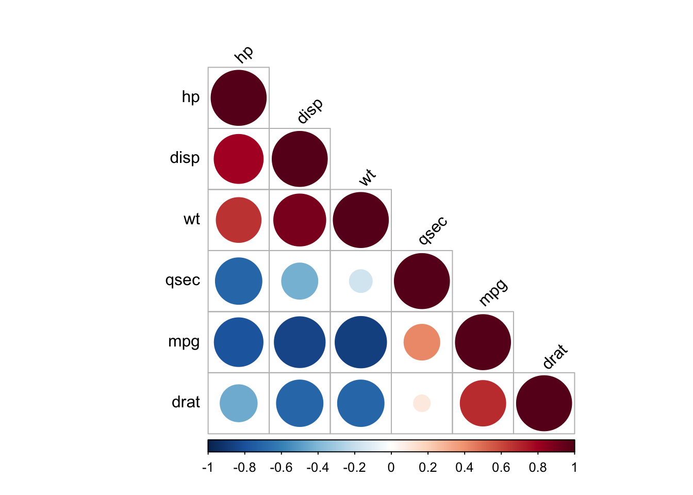
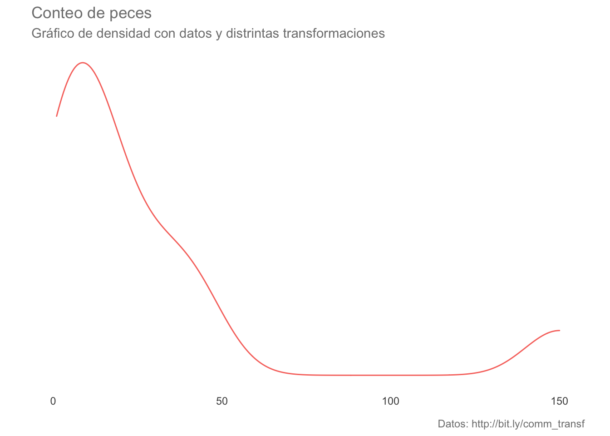

Análisis Multivariado: Introducción
Arturo Bell Enríquez García
Matrices de correlación y covarianzas:
Para obtenerlas utilizaremos las mismas funciones que para el cálculo individual (y por consiguiente podremos calcular también la \(\rho\) de Spearman). Utilicemos como ejemplo la base de datos mtcars:
head(mtcars)Ahora estimemos ambas matrices:
# Matriz de covarianzas
cov.mat <- cov(mtcars)
# Matriz de correlación
cor.mat <- cor(mtcars)
# Las imprimimos en pantalla
cov.mat## mpg cyl disp hp drat wt
## mpg 36.324103 -9.1723790 -633.09721 -320.732056 2.19506351 -5.1166847
## cyl -9.172379 3.1895161 199.66028 101.931452 -0.66836694 1.3673710
## disp -633.097208 199.6602823 15360.79983 6721.158669 -47.06401915 107.6842040
## hp -320.732056 101.9314516 6721.15867 4700.866935 -16.45110887 44.1926613
## drat 2.195064 -0.6683669 -47.06402 -16.451109 0.28588135 -0.3727207
## wt -5.116685 1.3673710 107.68420 44.192661 -0.37272073 0.9573790
## qsec 4.509149 -1.8868548 -96.05168 -86.770081 0.08714073 -0.3054816
## vs 2.017137 -0.7298387 -44.37762 -24.987903 0.11864919 -0.2736613
## am 1.803931 -0.4657258 -36.56401 -8.320565 0.19015121 -0.3381048
## gear 2.135685 -0.6491935 -50.80262 -6.358871 0.27598790 -0.4210806
## carb -5.363105 1.5201613 79.06875 83.036290 -0.07840726 0.6757903
## qsec vs am gear carb
## mpg 4.50914919 2.01713710 1.80393145 2.1356855 -5.36310484
## cyl -1.88685484 -0.72983871 -0.46572581 -0.6491935 1.52016129
## disp -96.05168145 -44.37762097 -36.56401210 -50.8026210 79.06875000
## hp -86.77008065 -24.98790323 -8.32056452 -6.3588710 83.03629032
## drat 0.08714073 0.11864919 0.19015121 0.2759879 -0.07840726
## wt -0.30548161 -0.27366129 -0.33810484 -0.4210806 0.67579032
## qsec 3.19316613 0.67056452 -0.20495968 -0.2804032 -1.89411290
## vs 0.67056452 0.25403226 0.04233871 0.0766129 -0.46370968
## am -0.20495968 0.04233871 0.24899194 0.2923387 0.04637097
## gear -0.28040323 0.07661290 0.29233871 0.5443548 0.32661290
## carb -1.89411290 -0.46370968 0.04637097 0.3266129 2.60887097cor.mat## mpg cyl disp hp drat wt
## mpg 1.0000000 -0.8521620 -0.8475514 -0.7761684 0.68117191 -0.8676594
## cyl -0.8521620 1.0000000 0.9020329 0.8324475 -0.69993811 0.7824958
## disp -0.8475514 0.9020329 1.0000000 0.7909486 -0.71021393 0.8879799
## hp -0.7761684 0.8324475 0.7909486 1.0000000 -0.44875912 0.6587479
## drat 0.6811719 -0.6999381 -0.7102139 -0.4487591 1.00000000 -0.7124406
## wt -0.8676594 0.7824958 0.8879799 0.6587479 -0.71244065 1.0000000
## qsec 0.4186840 -0.5912421 -0.4336979 -0.7082234 0.09120476 -0.1747159
## vs 0.6640389 -0.8108118 -0.7104159 -0.7230967 0.44027846 -0.5549157
## am 0.5998324 -0.5226070 -0.5912270 -0.2432043 0.71271113 -0.6924953
## gear 0.4802848 -0.4926866 -0.5555692 -0.1257043 0.69961013 -0.5832870
## carb -0.5509251 0.5269883 0.3949769 0.7498125 -0.09078980 0.4276059
## qsec vs am gear carb
## mpg 0.41868403 0.6640389 0.59983243 0.4802848 -0.55092507
## cyl -0.59124207 -0.8108118 -0.52260705 -0.4926866 0.52698829
## disp -0.43369788 -0.7104159 -0.59122704 -0.5555692 0.39497686
## hp -0.70822339 -0.7230967 -0.24320426 -0.1257043 0.74981247
## drat 0.09120476 0.4402785 0.71271113 0.6996101 -0.09078980
## wt -0.17471588 -0.5549157 -0.69249526 -0.5832870 0.42760594
## qsec 1.00000000 0.7445354 -0.22986086 -0.2126822 -0.65624923
## vs 0.74453544 1.0000000 0.16834512 0.2060233 -0.56960714
## am -0.22986086 0.1683451 1.00000000 0.7940588 0.05753435
## gear -0.21268223 0.2060233 0.79405876 1.0000000 0.27407284
## carb -0.65624923 -0.5696071 0.05753435 0.2740728 1.00000000Veámos la matriz de correlaciones gráficamente:
library(corrplot)## corrplot 0.84 loadedcorrplot(cor.mat, method = "ellipse", type = "upper")Ahora utilicemos una función que, en un solo paso, computará la matriz de correlación, realizará una prueba de significancia para cada una y además nos presentará la matriz de manera gráfica:
source("http://www.sthda.com/upload/rquery_cormat.r") # Descarga la función desde esa url y la carga en memoria
mydata <- mtcars[, c(1,3,4,5,6,7)] # Para fines prácticos se extrae un subconjunto de las columnas
rquery.cormat(mydata) # Se aplica la función
## $r
## hp disp wt qsec mpg drat
## hp 1
## disp 0.79 1
## wt 0.66 0.89 1
## qsec -0.71 -0.43 -0.17 1
## mpg -0.78 -0.85 -0.87 0.42 1
## drat -0.45 -0.71 -0.71 0.091 0.68 1
##
## $p
## hp disp wt qsec mpg drat
## hp 0
## disp 7.1e-08 0
## wt 4.1e-05 1.2e-11 0
## qsec 5.8e-06 0.013 0.34 0
## mpg 1.8e-07 9.4e-10 1.3e-10 0.017 0
## drat 0.01 5.3e-06 4.8e-06 0.62 1.8e-05 0
##
## $sym
## hp disp wt qsec mpg drat
## hp 1
## disp , 1
## wt , + 1
## qsec , . 1
## mpg , + + . 1
## drat . , , , 1
## attr(,"legend")
## [1] 0 ' ' 0.3 '.' 0.6 ',' 0.8 '+' 0.9 '*' 0.95 'B' 1Otra alternativa es utilizar la función chart.Correlation(data, histogram) de la librería PerformanceAnalytics, en la cual se muestran todos resultados en una misma gráfica:
library(PerformanceAnalytics)## Loading required package: xts## Loading required package: zoo##
## Attaching package: 'zoo'## The following objects are masked from 'package:base':
##
## as.Date, as.Date.numeric##
## Attaching package: 'PerformanceAnalytics'## The following objects are masked from 'package:moments':
##
## kurtosis, skewness## The following object is masked from 'package:graphics':
##
## legendchart.Correlation(mydata, histogram = T, pch = 19)Un comentario final al respecto de estas matrices es que, además de ser la base de las técnicas multivariadas, nos permiten evaluar la asociación entre nuestras variables sin comprometer un modelo predictivo, a la vez que nos permitirán hacer un filtrado de nuestras variables para evitar autocorrelaciones o incluir variables poco informativas, aunque de esto hablaremos más adelante.
Normalidad multivariada
Para analizar si nuestros datos multivariados se ajustan a una distribución normal multivariada utilizaremos la librería MVN, cuya función mvn(data, mvnTest, multivariatePlot) nos permite realizar una serie de pruebas tanto multi como univariadas:
Prueba de Mardia (1970)
Consiste en analizar si los momentos de la distribución Mv de los datos difieren de los esperados de una distribución Normal Mv (Mardia 1970), las hipótesis nulas son:
- \(H_0: S_{obs} = S_{NMv_{µ, \Sigma}}\)
- \(H_0: K_{obs} = K_{NMv_{µ, \Sigma}}\)
Donde \(\mu\) representa el vector de medias de cada variable y \(\Sigma\) la matriz de covarianzas.
Al realizar esta prueba vemos que la distribución Mv observada tiene una curtosis adecuada, aunque se encuentra fuertemente sesgada. Si analizamos los datos univariados vemos que en apariencia 2/6 variables presentan normalidad univariada.
library(MVN)## Registered S3 method overwritten by 'GGally':
## method from
## +.gg ggplot2## sROC 0.1-2 loadedmvntest <- mvn(mydata, mvnTest = "mardia")
mardia.test <- mvntest$multivariateNormality
unitest <- mvntest$univariateNormality
mardia.testunitestPrueba de Henze-Zirkler
Si observamos con atención los valores de p, veremos que hay algunos que se encuentran cercanos al umbral de 0.05 por lo que un análisis a partir de los cuantiles de la distribución puede ser una alternativa más informativa. Para ello podemos utilizar la prueba de Henze-Zirkler. Esta prueba considera una hipótesis compuesta, en la cual la distribución de X es una distribución normal no degenerada, cuyos resultados son consistentes contra cualquier distribución alternativa no normal (por ello compuesta). La representación está dada en términos de \(L^2\) (Distancia de Mahalanobis, más adelante hablaremos sobre medidas de distancia). Al ser una prueba de bondad de ajuste (observado vs. esperado), el estadístico de prueba sigue una distribución \(\chi^2\) (Henze y Zirkler 2007).
Aplicandola con mvn() vemos que también sugiere una falta de normalidad, lo cual podemos comprobar al ver el gráfico Cuantil-Cuantil
hz.test <- mvn(mydata, mvnTest = "hz", multivariatePlot = "qq")$multivariateNormalityhz.testEse gráfico, aunque informativo, puede trabajarse para hacerse más agradable a la vista utilizando ggplot2 utilizando la siguiente función personalizada creada a partir del código utilizado para la gráfica anterior:
# Funciones personalizadas:
# Extraida de la función mvn(multivariatePlot = "qq") para un gráfico QQ para normalidad multivariada utilizando la distancia de mahalanobis
ji2.plot <- function(df){
# Datos
n <- dim(mydata)[1] # número de datos
p <- dim(mydata)[2] # número de grupos
dif <- scale(mydata, scale = F) # Centramos los datos (a-µ(a)) sin escalarlos (sin dividir por su \sigma)
d <- diag(dif %*% solve(cov(mydata), tol = 1e-25) %*% t(dif)) # Cálculo de la distancia de mahalanobis^2
r <- rank(d) # Asignación de rangos a las distancias
ji2 <- qchisq((r - 0.5)/n, p) # Obtención de los cuantiles teóricos según la distribución ji^2
ji2.plot.data <- data.frame(d, ji2) # Reunimos los objetos en un data.frame para graficar con ggplot2
# Graficado
library(ggplot2)
ji2.qq <- ggplot(data = ji2.plot.data, aes(x = d, y = ji2)) +
geom_point(colour = "deepskyblue4", alpha = 0.5, size = 4) +
geom_abline(slope = 1, colour = rgb(118,78,144, maxColorValue = 255), size = 1) +
labs(title = bquote("Gráfico QQ de" ~~ {chi^2} ~~ ", g.l = "~ .(p)),
subtitle = bquote("Distancia de Mahalanobis ("~{D^2}~") vs. Cuantiles teóricos"),
x = element_blank(),
y = element_blank(),
caption = "Basado en mvn(..., multivariatePlot == \"qq\")"
)
return(ji2.qq)
}
# Tema personalizado
blank_theme <- function(){
theme(panel.grid.minor = element_blank(),
panel.grid.major = element_blank(),
panel.background = element_blank(),
axis.line = element_blank(),
aspect.ratio = 1/1.61,
axis.ticks = element_blank(),
text = element_text(colour = "gray50"), # Eliminar
legend.position = "none"
)
}qqjiplot <- ji2.plot(mydata) + blank_theme()
qqjiplotPrueba de Royston
Esta prueba es una extensión multivariada de la prueba por excelencia para la normalidad univariada: la prueba de Shapiro-Wilk’s. Originalmente propuesta en 1983, aunque fue corregida/ampliada por el mismo autor en 1992 (Royston vs. otras). Funciona mejor para muestras pequeñas, aunque no se recomienda emplearla con menos de 3 observaciones o con más de 2000.
Su implementación sigue la misma línea que los casos anteriores. Si analizamos el valor de p, veremos que se encuentra en el límite de la significancia a un \(\alpha = 0.05\); sin embargo, si consideramos también el gráfico QQ que elaboramos anteriormente, no podemos asumir que esas desviaciones sean despreciables.
royston.test <- mvn(mydata, mvnTest = "royston")$multivariateNormality
royston.testIgualdad de dispersiones multivariadas
Conforme vayamos avanzando en el curso veremos que, entre los supuestos de algunas pruebas, vamos a encontrar el de “igualdad de dispersiones multivariadas”; i.e., igualdad de matrices de covarianza. Una alternativa es utilizar la prueba de Anderson (2006), la cual es un análogo multivariado a la prueba de Levene para la homogeneidad de varianzas. La prueba de hipótesis está basada en distancias no euclidianas entre los grupos (i.e., no utiliza el teorema de Pitágoras :( ). Un dato curioso es que este método también se ha utilizado para evaluar la diversidad \(\beta\) de una comunidad.
Para su implementación en R utilizaremos la función betadisper de la librería vegan. Al ser un método basado en distancias, primero habrá que transformar los datos a una matriz de distancias utilizando alguna de las funciones dist, betadiver o vegdist. Necesitamos, además, establecer los grupos a utilizar.
library(vegan)## Loading required package: permute## Loading required package: lattice## This is vegan 2.5-7dist.mat <- vegdist(mydata, method = "bray", type = c("median"))
groups <- as.character(mtcars$cyl)
#dist.mat # Por fines prácticos no se muestra, ya que calcula una distancia entre cada par de instancias o grupos, resultando en matrices sumamente grandesAhora utilizaremos la función betadisper para comprobar la homogeneidad de dispersiones entre los distintos cilindros. Esta prueba únicamente genera el espacio multivariado para realizar la prueba, realizando un ACP para reducir la dimensionalidad de la base de datos y estimar las distancias a la mediana de cada uno de los grupos establecidos.
disp.mv <- betadisper(dist.mat, group = groups, type = "median") # Realizar el procedimiento
disp.mv##
## Homogeneity of multivariate dispersions
##
## Call: betadisper(d = dist.mat, group = groups, type = "median")
##
## No. of Positive Eigenvalues: 18
## No. of Negative Eigenvalues: 13
##
## Average distance to median:
## 4 6 8
## 0.09587 0.06171 0.08251
##
## Eigenvalues for PCoA axes:
## (Showing 8 of 31 eigenvalues)
## PCoA1 PCoA2 PCoA3 PCoA4 PCoA5 PCoA6 PCoA7 PCoA8
## 1.392690 0.091453 0.040689 0.037914 0.025951 0.009016 0.007642 0.004007Si realizamos la prueba de hipótesis vemos que, al parecer, las dispersiones multiviariadas son similares entre los 3 grupos.
anova(disp.mv) # Prueba de hipótesisAhora veamos las dispersiones gráficamente:
plot(disp.mv, ellipse = T, hull = F) # Análisis gráfico Al analizar el gráfico vemos que las dispersiones son similares; sin embargo, pareciera que la dispersión del grupo 6 es más pequeña que la de los grupos 4 y 8, en tonces realicemos las comparaciones pareadas univariadas con la prueba Honesta de Diferencias Significativas de Tukey (TukeyHSD). Los resultados sugieren que las dispersiones con un \(\alpha = 0.05\) son similares, lo cual a su vez pudiera sugerir que hay un equilibrio entre las dispersiones en el eje x con respecto a las dispersiones en el eje y.
mod.HSD <- TukeyHSD(disp.mv)
mod.HSD <- data.frame(mod.HSD$group, comp = dimnames(mod.HSD$group)[[1]])
mod.HSDAl igual que en el caso anterior podemos utilizar ggplot para personalizar el gráfico:
hsd.plot <- ggplot(data = mod.HSD,
aes(x = comp)) +
geom_point(aes(y = diff),
colour = "deepskyblue4",
size = 4,
alpha = 0.7)+
geom_errorbar(aes(ymin = lwr, ymax = upr),
colour = "deepskyblue4") +
blank_theme() +
labs(title = "Diferencias en dispersión multivariada e IC",
subtitle = "Prueba HSD de Tukey",
x = "Grupos",
y = element_blank()) +
scale_y_continuous(breaks = NULL) +
geom_hline(yintercept = 0, colour = rgb(118,78,144, maxColorValue = 255), linetype = "dashed") +
annotate("text",
x = 0.5, y = 0+0.005,
label = as.character(0),
colour = rgb(118,78,144, maxColorValue = 255)
) +
geom_hline(yintercept = max(mod.HSD$upr), colour = "firebrick", alpha = 0.7, linetype = "dashed") +
annotate("text",
x = 0.5, y = max(mod.HSD$upr)-0.005,
label = as.character(round(max(mod.HSD$upr),2)),
colour = "firebrick"
) +
geom_hline(yintercept = min(mod.HSD$lwr), colour = "firebrick", alpha = 0.7, linetype = "dashed") +
annotate("text",
x = 0.5, y = min(mod.HSD$lwr)-0.005,
label = as.character(round(min(mod.HSD$lwr),2)),
colour = "firebrick"
) +
geom_text(aes(label = paste("p = ", round(p.adj,2)), y = 0),
stat = "identity",
nudge_y = max(mod.HSD$upr)+0.005, colour = "gray50")
hsd.plotImplicaciones analíticas de la multidimensionalidad
Es importante mencionar que entre más incrementemos la dimensionalidad de nuestro problema más difícil será resumir en un solo resultado las pruebas de nuestros análisis y, en consecuencia, deberemos de considerar distintas técnicas/estrategias que analicen nuestros datos desde distintas perspectivas antes de emitir un juicio o extraer conclusiones. Por esta razón, es sumamente importante que realicemos una selección de variables de manera rigurosa antes de comenzar nuestro análisis, ya que incluir variables innecesariamente únicamente incrementará la varianza de los datos sin aportarnos ninguna información adicional, causando desviaciones de la normalidad, modelos complejos sobre o infra ajustados y pérdidas de poder estadístico.
En cuanto a la normalidad, hay un par de consideraciones a tener en cuenta. La primera es que si nuestro análisis está basado en la matriz de correlación estaremos cumpliendo el supuesto de normalidad de la técnica que estemos aplicando (de tenerlo), ya que, explícitamente ajustamos los datos a una distribución normal. Por otra parte, es importante mencionar que si nuestros datos en realidad no se ajustan o se encuentran fuertemente desviados de la normalidad, las conclusiones que extraigamos serán únicamente sobre la tendencia más general de nuestros datos (Revisar: desigualdad/teorema de Chebyshev) y, en consecuencia, pueden no ser una representación completa de nuestras muestras. Si esto es importante o no, dependerá de nuesta pregunta de investigación y qué tan fino querramos que sea el análisis.
Transformaciones o deformaciones
Habiendo tocado el tema de la estandarización, hablemos también del resto de transformaciones. En general, podemos considerar que existen dos tipos de transformaciones: 1. Aquellas que afectan la distribución de los datos (logarítmica) 2. Aquellas que simplemente cambian los límites de la distribución original (MinMax)
¿Cuál utilizar? Dependerá de nuestros objetivos para hacerla, lo cual me lleva al punto de que: NINGUNA transformación debe de ser aplicada sin cuidado. Hay que tener en cuenta que aunque no se cambie la distribución de los datos, el análisis ya no se realiza sobre los datos originales, lo cual puede causar errores de interpretación. Con esto no quiero decir que las transformaciones sean malas, solo que hay que emplearlas con una justificación y asegurarnos de re-transformar los datos antes de hacer inferencias.
Veamos algunas de las transformaciones más comunes y cuáles son sus consecuencias en los datos. Para ello, consideremos estos datos sin transformar. Vemos que están altamente sesgados y en consecuencia bastante alejados de la normalidad:
# Función de graficado
kdeplots <- function(data, aes){
kdeplots <- ggplot(data, aes) +
geom_density() +
blank_theme() +
labs(title = "Conteo de peces",
subtitle = "Gráfico de densidad con datos y distrintas transformaciones",
caption = "Datos: http://bit.ly/comm_transf",
x = element_blank(),
y = element_blank()) +
scale_y_continuous(breaks = NULL)
return(kdeplots)
}df <- data.frame(datos = c(38, 1, 13, 2, 13, 20, 150, 9, 28, 6, 4, 43), transf = "originales")
kde.plots <- kdeplots(df, aes(datos, color = transf))
kde.plots
Estandarización
Veamos el efecto de estandarizar los datos; es decir, utilizar la distribución Z. El resultado es la misma distribución, aunque los datos ahora se encuentran escalados en el intervalo [-3,3] indicando a cuantas SD de la media se encuentra cada punto.
df2 <- rbind(df, data.frame(datos = (df$datos-mean(df$datos))/sd(df$datos), transf = "Z"))
kde.plots <- kdeplots(df2, aes(datos, color = transf)) + facet_wrap(~transf, scales = "free")
kde.plots
Transformación logarítmica:
Posiblemente la transformación más conocida, utilizada y, en consecuencia, abusada.Se realiza aplicando la ecuación \(X_{log} = log_n(X)\). (OJO: si hay ceros será \(X_{log} = log_n(X+1)\), ya que el logaritmo de 0 no existe). Veamos qué le pasa a la distribución al aplicarla. La distribución cambió notablemente, ahora se encuentra mucho más cerca de una forma de campana. ¿Cuándo aplicarla? Cuando querramos forzar nuestros datos a una distribución normal para cumplir con los supuestos de alguna prueba paramétrica, linealizar los datos y, equivocadamente, ponerlos en la misma escala que otra variable. Con excepción del último caso, cualquiera de las formas está matemáticamente justificada, solo hay que tener en consideración que los datos no son los originales y que pueden no representar adecuadamente nuestro muestreo. Otro caso en el cual es válido utilizarlo es si queremos ver cuál es cuando tenemos distintos factores y nuestra variable de respuesta es el resultado de su interacción (producto) tal que \(Y = a \times b \times c \times d\times ... \times z\) (efecto multiplicativo y no aditivo), ya que el resultado es una distribución con forma log-normal que no es posible capturar con los datos originales. Su re-transformación es \(n^{X_{log}}\). Salvo en el último caso, recomiendo contrastar los resultados con una prueba no paramétrica utilizando los datos originales y ver cuáles son las diferencias.
df2 <- rbind(df2, data.frame(datos = log(df$datos), transf = "log(x)"))
kde.plots <- kdeplots(df2, aes(datos, color = transf)) + facet_wrap(~transf, scales = "free")
kde.plotsRaíz cuadrada
Otra transformación muy empleada, consiste en en obtener la raíz cuadrada de cada uno de los datos (\(\sqrt{X}\), OJO: si hay valores negativos no se puede utilizar, hay que pasarlos a valores absolutos o añadir una constante para volverlos positivos). Veamos su efecto en la distribución. En este caso el cambio en la forma no es tan agresivo, y la consecuencia es únicamente que las diferencias entre los valores más altos y los más pequeños se redujo. Su re-transformación es: \(\sqrt{x}^2\). Su uso más común es con datos de conteo (abundancias, bacterias en una caja petri, etc.)
df2 <- rbind(df2, data.frame(datos = sqrt(df$datos), transf = "sqrt(x)"))
kde.plots <- kdeplots(df2, aes(datos, color = transf)) + facet_wrap(~transf, scales = "free")
kde.plots